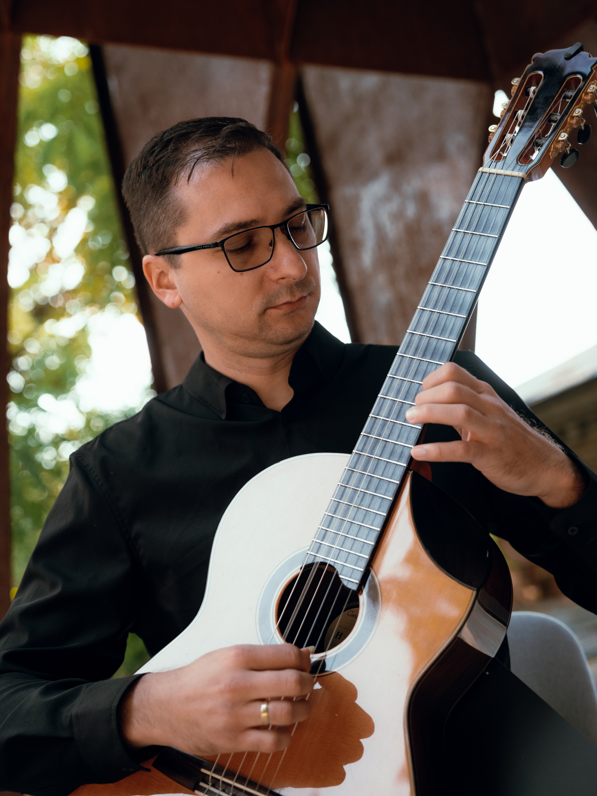

Dan Alexandru Arhire
Chitarist · Profesor universitar

Dan Alexandru Arhire este interpret de chitară, lector universitar la Universitatea de Arte „George Enescu” din Iași și, totodată, medic radiolog.
A absolvit studiile doctorale cu distincția Summa cum laude, cu o cercetare despre lucrările pentru chitară ale lui Joaquín Rodrigo, avându-i de-a lungul timpului ca îndrumători pe profesorii Daniel Dragomirescu, Constantin Stanciu, Dan Prelipcean (cvartetul Voces) și pe maestrul italian Aniello Desiderio la Academia de Chitară din Koblenz, Germania.
A apărut ca solist recurent alături de Filarmonicile din Iași, Botoșani, Ploiești, Brăila și Oradea, interpretând cu aceste ocazii Concierto de Aranjuez și Fantasía para un gentilhombre de Joaquín Rodrigo.
În 2025 a debutat pe scena Ateneului Român, alături de Orchestra Medicilor „Ermil Nechifor”, iar în 2026 a susținut premiera națională a Concertului „Albeniz” pentru chitară și orchestră de Stephen Goss.